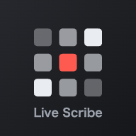
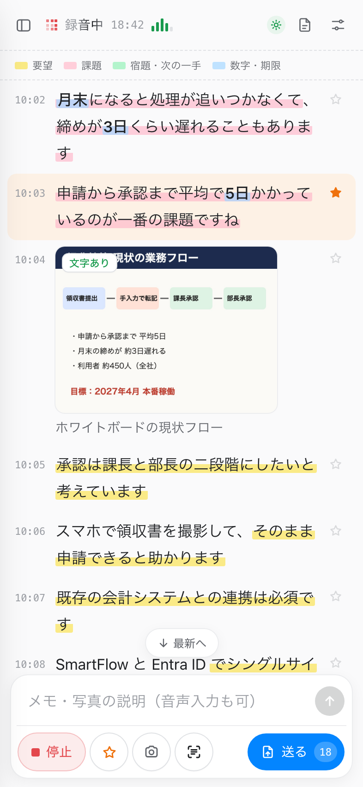
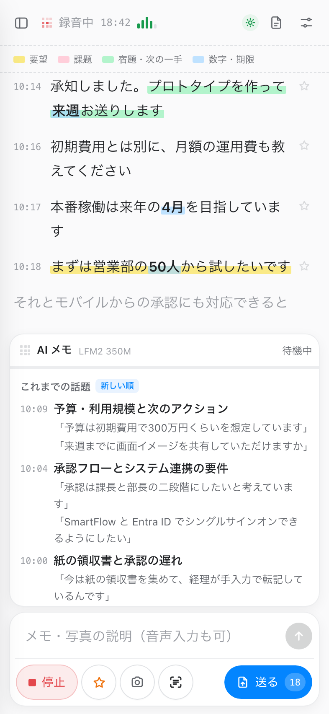
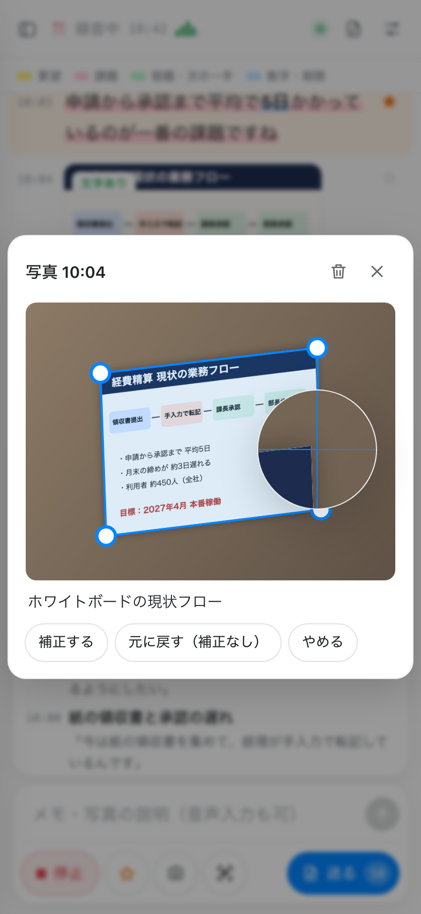
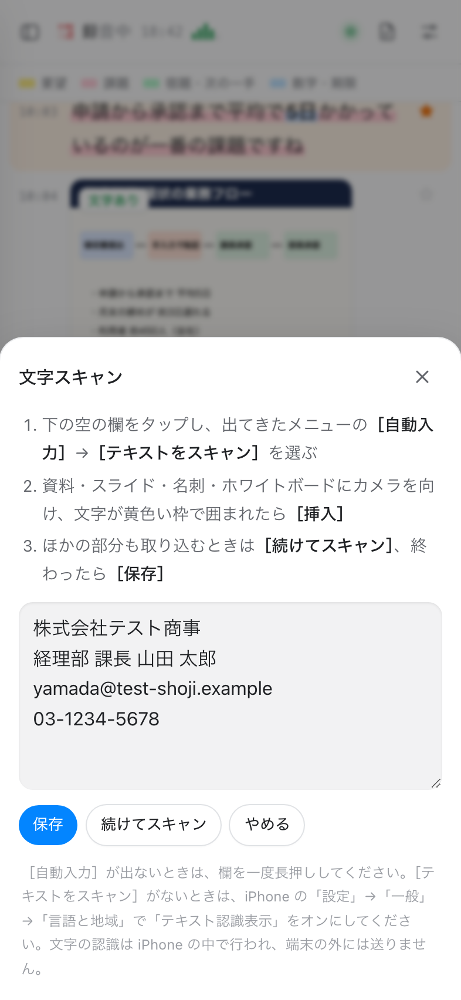
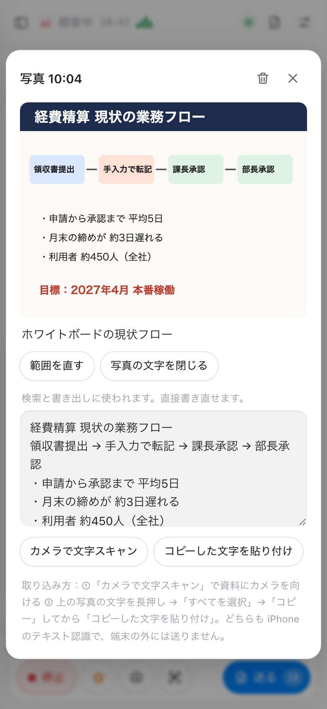
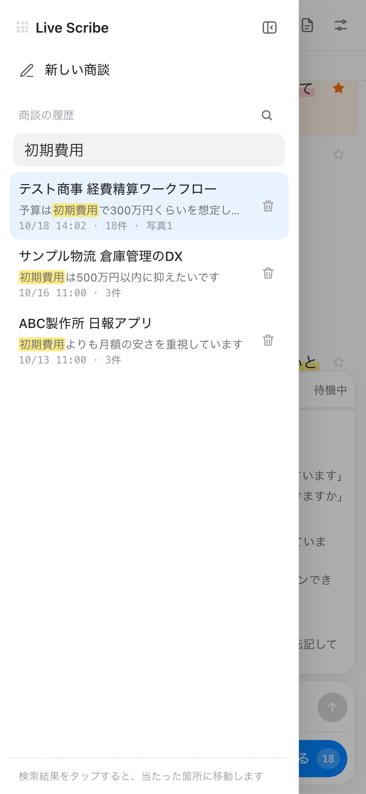
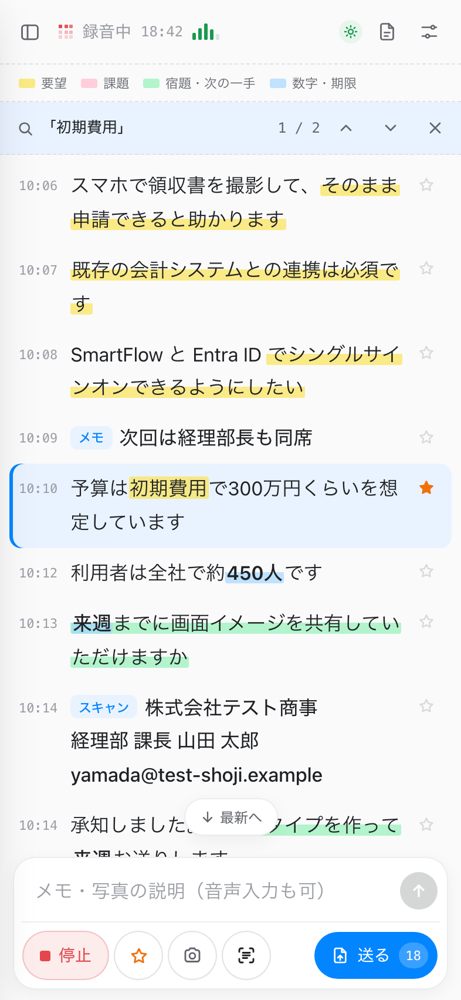
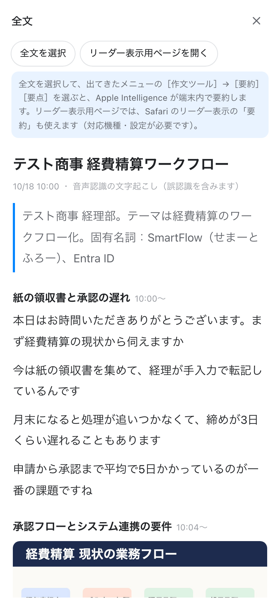
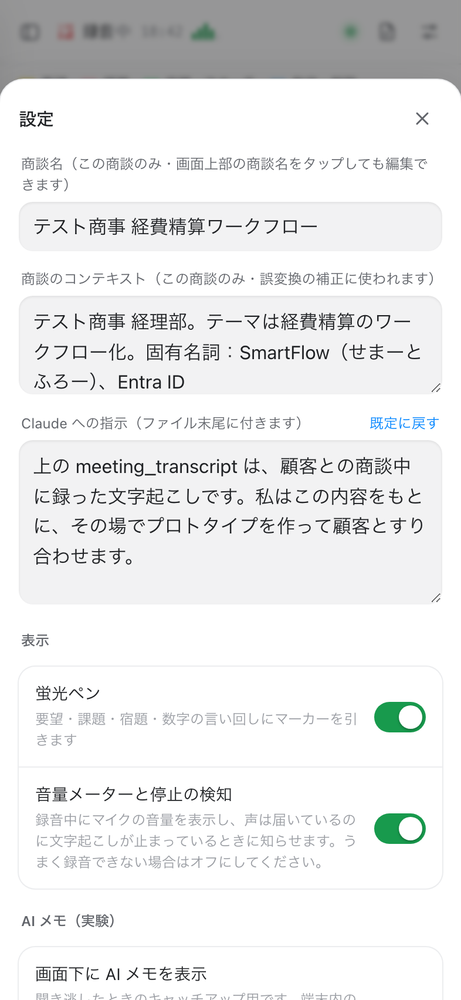

Live Scribe の使い方
商談をその場で文字にして、Claude にまとめて渡す
3ステップで使う
録音して、印を付けて、送るだけ。
最初に1回だけ
- iPhone の Safari で開く（ホーム画面に追加してもOK）
- 設定 → アプリ → Safari → マイク を許可、Siri（音声入力）をオン
- 右上の 設定で、商談のコンテキスト（社名・製品名）を書いておく
画面の見方
番号の場所を押して使います。

- 1履歴過去の商談・新しい商談・検索
- 2状態と経過時間録音中は赤く点滅
- 3音量メーター緑＝声が届いている
- 4全文表示Apple Intelligence で要約
- 5設定コンテキスト・指示・各機能のオンオフ
- 6蛍光ペンの色要望・課題・宿題・数字
- 7☆ 重要その発言に印を付ける
- 8写真タップで拡大・補正・文字の取り込み
- 9メモ欄手入力・音声入力。写真の説明にもなる
- 10録音開始 / 停止
- 11☆ 直前を重要に・📷 写真・文字スキャン
- 12送る数字は未送信の件数
音声認識のしくみ
Safari の Web Speech API が、iPhone の音声入力（Siri と同じ認識）を呼び出します。
止まったら知らせる
精度を上げるコツ
- iPhone を話す人の近くに
- 商談のコンテキストに固有名詞を書く（Claude が誤変換を直す）
- 録音中は画面を点けたまま（自動）
蛍光ペン・重要・メモ
言い回しから自動で色が付きます。大事なところは ☆ で。
重要とメモは、送るファイルで別の欄（important / notes）に分けて Claude に優先してもらいます。
AI メモ（聞き逃しのキャッチアップ）
約2分ごとに話題の見出しを付け、原文の発言をそのまま引用します。

写真と台形補正
撮った時刻の位置に挟まります。斜めに撮っても正面に直せます。

外れたら「範囲を直す」で角をドラッグ。
指の上にルーペが出ます
- 設定 → 写真の台形補正 をオン（初回だけ約10MB）
- で撮る → 裏で自動補正
- 「範囲を確認」が付いたら、写真をタップして 範囲を直す
- 補正する / 元に戻す（元の写真は残ります）
撮る前にメモ欄へ書いた文字は、その写真の説明になります。
文字スキャン（名刺・スライド・ホワイトボード）
iPhone のテキスト認識で、カメラから文字を直接取り込みます。
ない → 「スキャン」として発言の間に挟む

［続けてスキャン］で何か所でも

写真 →「写真の文字を取り込む」。
写真の文字を長押しでコピー → 貼り付けも可
取り込んだ文字は検索と書き出し（<ocr>）に使われます。認識は iPhone の中で行われます。
検索とジャンプ
過去の商談を探して、その発言の場所へ飛べます。

① 履歴 → 🔍 で検索

② 結果をタップ → 当たった発言へ。
▲▼ で次の箇所、× で閉じる
表記ゆれをそろえて探す
読み検索（設定でオン・約18MB）
Claude に渡す
「送る」で、前回からの分を1つの zip にします。

全文表示 → 全文を選択 →［作文ツール］→［要約］
Apple Intelligence が端末内で要約

設定で、この商談のコンテキストと
Claude への指示を編集
データはどこにあるか
商談のデータはこの iPhone の Safari の中だけ。サーバーはありません。
Safari の「Webサイトデータを削除」やプライベートブラウズでは、保存した商談が消えます。大事な商談は「送る」で残してください。
メモリのこと
iPhone では重いモデルを 同時に1つだけ 載せます。
AI メモを優先
LLM を外して実行
録音を始めると AI メモを読み込み直します。
困ったとき
文字にならない
設定 → アプリ → Safari → マイク を許可。設定 → Siri で音声入力をオン。画面に警告が出たら「停止」→「録音再開」。
［テキストをスキャン］が出ない
欄を空にしてタップ →［自動入力］の中にあります。ないときは 設定 → 一般 → 言語と地域 →「テキスト認識表示」をオン。
ホーム画面のアイコンから開くと録音できない
「Webアプリとして開く」をオフにして追加し直してください。画面の「Safari で開く」からも戻れます。
ページが勝手に読み込み直された
メモリ不足の可能性があります。次に開いたときに原因が出ます。AI メモのモデルを軽くするか、使わない機能をオフに。
AI メモが動かない
iOS 26 以降の Safari（WebGPU）が必要です。初回はモデルのダウンロードに時間がかかります。
送ったファイルはどこ？
ファイル App → ダウンロード。そこから共有で Slack や Claude へ。
設定の早見表
| コンテキスト | 社名・固有名詞。誤変換の補正に。表記（よみ） で読みも教えられる |
| Claude への指示 | 送るファイルの最後に付く。既定に戻せる |
| 蛍光ペン | 色付けのオン・オフ |
| 音量メーター | うまく録音できないときはオフに |
| AI メモ | 見出し付け。モデルを選べる |
| 読み検索 | 同音の誤変換も検索で拾う |
| 写真の台形補正 | 自動で正面に直す。元画像を消す設定も |
| いつも zip で | オフなら写真がない回は .txt |